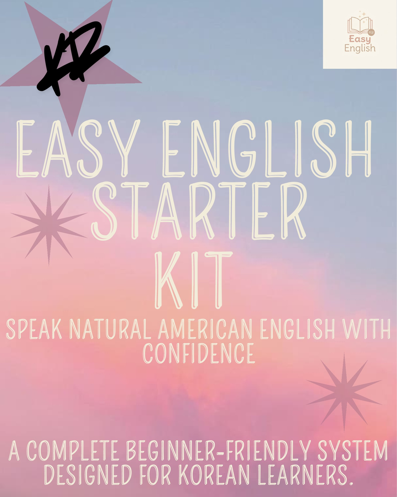
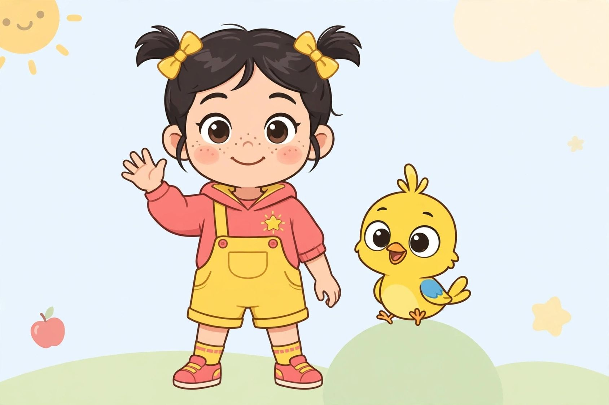

Silly Pip! — Apple
Apple & banana. Pip's confident mistake gives children the best job — correcting him out loud.
Korea Edition · By Olivia Patterson
Speak natural American English with confidence.
A complete beginner-friendly system for Korean adults whose school English never became speaking confidence — 194 pages of vocabulary cards, grammar cheat sheets, real dialogues, and pronunciation coaching, all in simple English that never talks down to you. One idea per page, big and clear, so starting feels easy. This is the Beginner (A1–A2) kit — the first step, with a next-level follow-up series planned for after it.
In Olivia's own voice
“Hi, I'm Olivia. Welcome to the Easy English Starter Kit. This kit was made for Korean learners who studied English in school but never got to speak it. We start small, we practice out loud, and we build real confidence. Let's start!”
Olivia recorded this herself — this is her real voice, not a computer voice — and it doesn't stop at the welcome: all 20 dialogues and eleven pronunciation drills are recorded in her voice too — find them in the dialogues section and the Listen & Watch section below.

What's included
Beginner (A1–A2) · For Korean adults whose school English never became speaking confidence. Everything below comes from the complete kit itself — all 194 pages. The kit now opens with a publishing page and closes with an About the Author page. Every section was built around the exact places Korean learners get stuck, and almost every teaching page ends with practice and an answer page.
Every card carries the English word, its Korean translation, an example sentence, a pronunciation guide, and a picture — organized by the themes of real life:
Each sheet starts with why Korean learners struggle with that exact point, gives one clear fix, then practice — and the answers on the next page. The 20 topics:
Short, natural conversations with Korean support — at the office, at the airport, ordering food, making plans, meeting someone new. Built to be read aloud and used the same day. See all 20 and read one.
Korean-specific coaching for the sounds Korean doesn't have, taught with tongue and lip positions and minimal pairs — word pairs that differ by one sound:
A bilingual planner that turns the kit into a daily habit: a 30-day overview (your goal, your reason, your study time, your focus areas), weekly goals, a weekly checklist — 10 new words, 10 minutes of speaking, listening practice, grammar review, minimal pairs, 3 sentences — a daily study plan page, a vocabulary log, speaking and listening practice pages, a four-week habit tracker, a weekly review, and a monthly reflection that ends with new goals and a congratulations page.
Practice is woven through the whole kit rather than saved for the end: fill-in practice on every grammar and pronunciation page with the answers right after it, plus dedicated planner practice pages — pick a grammar point and use it, write 3 sentences with today's vocabulary, answer questions about a short text, and drill 5 minimal pairs.
High-value add-ons that keep English going outside the “study” pages:
Section 1 · Try it yourself
Pick a theme, then tap any card to flip it — the Korean meaning, example sentence, and pronunciation are on the back, exactly as printed in the kit. Press Listen to hear the word and sentence out loud.
Look inside
Actual pages from the full 194-page kit — tap a thumbnail to turn the page.
Section 3 · Conversation Dialogues
Short enough to practice in a few minutes, real enough to use the same day. Here is one in full, exactly as it appears in the kit:
Olivia recorded this dialogue herself — press play on her version first, listen, then say each line out loud in the pauses.
One of the first two dialogues Olivia recorded for the kit. Listen, then practice both parts out loud — greetings are the first thing learners actually use.
All 18 are recorded by Olivia herself, each with its lines written out to read along. Press play, then say both parts out loud.
Some Korean expressions don't translate word for word — and some English borrowed into Korean has drifted. The kit fixes both, kindly:
New · Audio & Video for the Starter Kit
The kit was always made to be spoken out loud — and here it plays in Olivia's own voice: her recorded welcome at the top of this page, all 20 dialogues, and eleven pronunciation drills below. These are her real recordings — press play and practice along.
All 20 dialogues are now recorded by Olivia herself — At the Airport and Meeting Someone New have their own boxes in the dialogues section above, and the other 18 are there too, each with its lines written out to read along.
Six more topics from the Pronunciation Master Guide, recorded by Olivia:
💡 How to practice: Listen once → listen and repeat → cover the text and say it from memory. The vocabulary cards above work the same way — every card has its own Listen button on the back.
The same recordings live in two places: as players on this page, and as QR codes printed in the book.
Each dialogue page gets its own QR. Learner reads → scans → hears Olivia → repeats. On this page, they just press Play — no phone needed.
How the kit teaches
No long grammar lectures. Each page names the real reason something is hard, fixes just that, then lets the learner try it right away.
Step 1 · Why
“Korean has no articles.” “Korean has no ‘th’ sound.” The page says the honest reason first — so learners stop blaming themselves and start fixing the actual problem.
Step 2 · Fix
“Use a/an for one, non-specific thing. Use the for specific things already known.” One clear move, shown simply — never a page of rules.
Step 3 · Practice
A short practice sits on the same page — “I bought ___ book. ___ sun is bright today.” — with the answers on the next page, so learners can check themselves honestly.
Children's series · Watch & Listen
The Starter Kit's little sibling: a children's video + audio series for ages 3–7 learning English as an additional language. Nina — curious, friendly, and happy to learn alongside the viewer — and her tiny bird Pip, who confidently gives the wrong answer so children get the joy of correcting him. Every short episode teaches one small thing and invites the child to join in. Press Watch for video, or Listen for audio-only — perfect for car rides and bedtime replay.

Each episode is built for co-watching: pause when Pip guesses wrong and let your child shout the right answer first. The Listen buttons read the key words slowly so children can echo them — no screen needed.
Now playing: Silly Pip! — Apple (33 seconds). Pip is sure the apple is a banana. Real pauses are built in so a child watching can answer out loud before Nina does.
Video lives right on this page — no need to leave for YouTube.
One full video is playable here today. Every episode also has a Listen button for its key words, so the whole set works as audio even before the next videos are added.
Apple & banana. Pip's confident mistake gives children the best job — correcting him out loud.
The color red. A hide-and-seek hunt that teaches looking, listening, and shouting “Red!”
Cat & dog. Two favorite animals, one silly mix-up, lots of chances to answer.
Guessing & animal words. Sounds and clues behind the door — who is roaring?
Colors all around the room. A gentle hunt children can play along with at home.
Watch, listen, and say it out loud — the same friendly system as the Starter Kit dialogues, in the player on this page and by QR code in the printable mini-book.
About the maker · Who it's for
Level: Beginner (A1–A2) — made for Korean adults whose school English never became speaking confidence. You may have studied English for years in school and still freeze when you have to speak — this kit starts there, kindly, and builds real speaking step by step. A next-level follow-up series is planned for when you finish this one.
Olivia Patterson is a native English speaker from California and a Trinity CertTESOL-certified teacher who has taught English in Italy, Albania, and Guam, both in classrooms and online. Her writing has been published in a college newspaper and online. She built the Starter Kit in Canva while finishing her Bachelor's Degree in English from the University of Guam, with a focus on linguistics and teaching English as a second language (ESL) — the kit is the applied product for her Public Linguistics final project, presented at the end-of-semester showcase, and the case study at the heart of her Technology and Language paper.
Her rule for every page: simple, warm English that never makes a beginner feel small. “You don't need to be perfect. You need to be consistent” — one of the kit's own motivational pages — is the whole philosophy in one line.